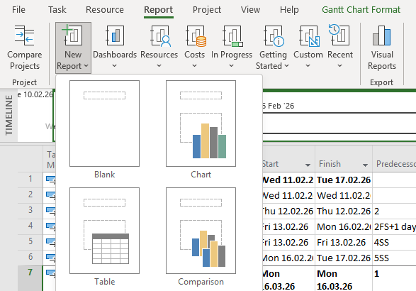
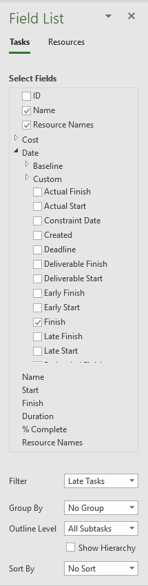
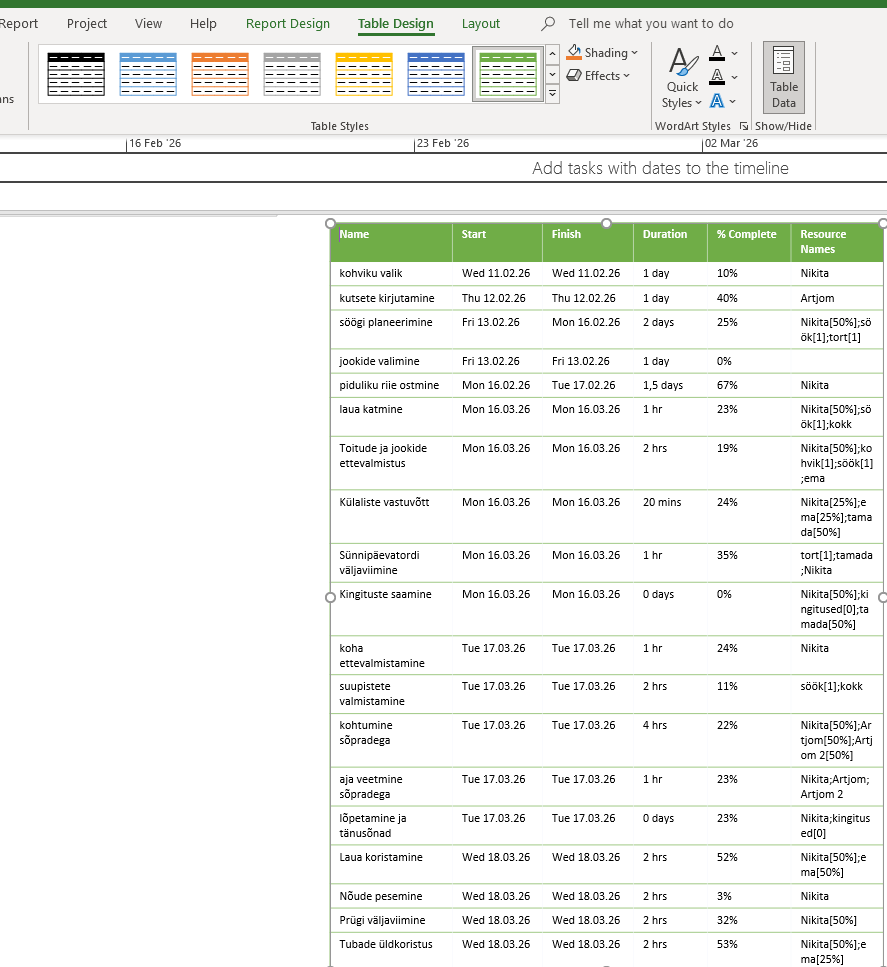
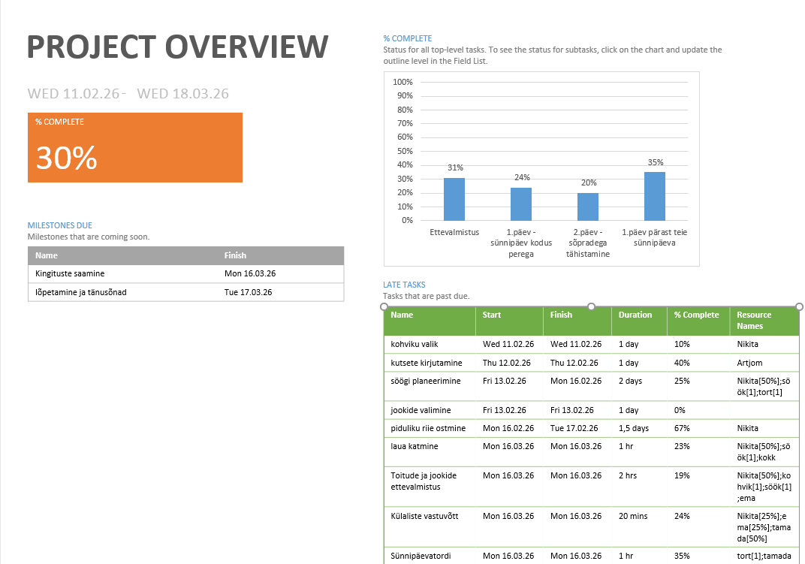

01
Aruande valimine
Ava vahekaart Report ja klõpsa New Report. Vali sobiv aruande tüüp: Blank, Chart, Table või Comparison. Anna aruandele nimi.

02
Diagrammi andmete seadistamine
Klõpsa diagrammil — paremal avaneb Field List paneel. Vali, milliseid andmeid soovid kuvada (nt Cost, Work, % Complete). Saad muuta ka diagrammi tüüpi (tulp, joon, sektor).

03
Diagrammi kujundamine ja eksportimine
Kasuta Design ja Format vahekaarte diagrammi visuaalse välimuse muutmiseks. Aruande saab eksportida PDF-ina: File → Export → Create PDF/XPS Document.

Miks kasutada diagramme?
Visuaalsed aruanded aitavad projekti edenemist kiiresti hinnata ja tulemusi meeskonnale või juhtkonnale selgelt esitada. MS Project pakub mitmeid eelnevalt seadistatud aruandeid, mida saab kohe kasutada.
Kuidas näeb välja täielik tabel koos diagrammidega:
